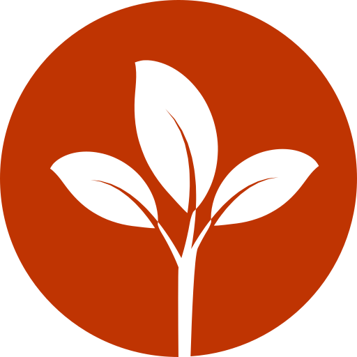
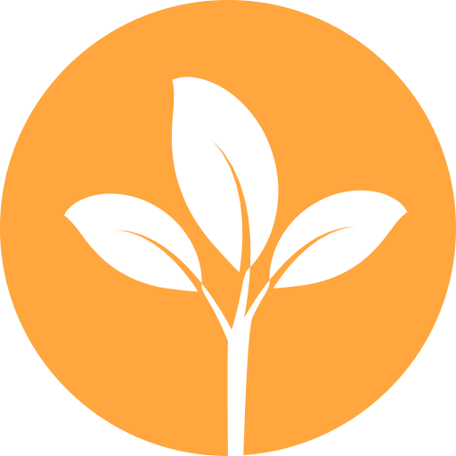

<ion-row>
    <div class="planta">
        
        <ion-item no-lines class="titulo" color="secondary">
            Planta #1
            <button class="refresh-button" ion-button icon-only clear (click)="getUmidade()">

                <ion-icon name="refresh" style="font-size: 18pt;" clear color="light"></ion-icon>
            </button>

                
        </ion-item>
        <div class="planta-status" text-center>
            
            
            
        </div>
        
        <div class="planta-info">
            <ion-row>
                
                <ion-list>
                    <ion-item no-lines>
                        Status: {{status}}
                    </ion-item>
                    <ion-item no-lines>
                        Última irrigação em: {{irrigacao}}
                    </ion-item>
                    <ion-item no-lines>
                        Última atualização em: {{att}}
                    </ion-item>
                    <ion-item no-lines>
                        Conexão: OK
                    </ion-item>
                    
                    
                </ion-list>
                
                <button ion-button class="planta-button" (click)="acionaRele()">
                    Regar
                </button>
            </ion-row>
        </div>
        
    </div>
    
    <div class="irrigacao-counter">
        <ion-item no-lines text-center class="titulo" color="secondary">
            
            Últimas atividades
            
        </ion-item>
        <div style="padding: 15px;">
            <ion-item no-lines *ngFor="let ativ of atividades" style="line-height: 30px;">
                <div *ngIf="ativ.value != true">
                    <b>Atualização de status de Umidade: </b>{{ativ.value}}
                    <br>
                    Timestamp: {{ativ.timestamp}}
                </div>
                <div *ngIf="ativ.value == true">
                    <b>
                        Irrigação iniciada
                    </b>
                    <br>
                    Timestamp: {{ativ.timestamp}}
                </div>
            </ion-item>
        </div>
    </div>
    
</ion-row>
